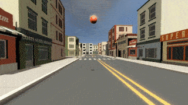
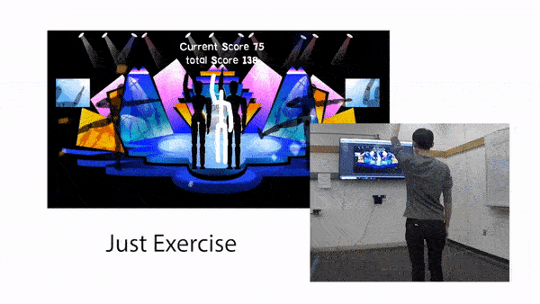
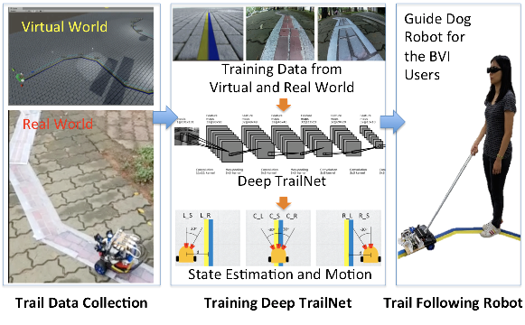
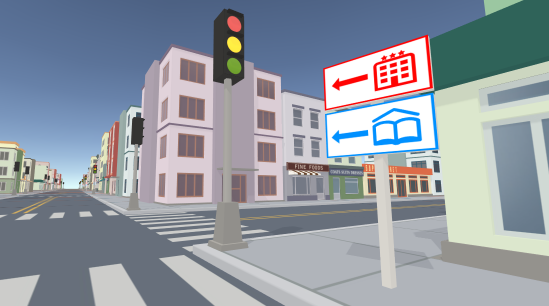
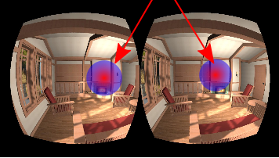

| Interactive Design of Gallery Walls via Mixed Reality Haikun Huang,Yuxuan Zhang, Tomer Weiss, Rebecca W Perry, Lap-Fai Yu, Lap-Fai Yu a novel interactive design tool that allows users to create and visualize gallery walls via a mixed reality device. Design Interfaces | Mixed Reality | Spatial Computing IEEE AIVR, 2020 Project Page | Paper | Video | Bibtex |
 |
Exertion-Aware Path Generation *Wanwan Li, *Biao Xie, Yongqi Zhang, Walter Meiss, Haikun Huang, Lap-Fai Yu *Equal contributors Generating exertion-aware paths over 3D terrains for VR exercising. Procedural Modeling | Level Design | Path Generation | Haptics ACM Transactions on Graphics (Proceeding of SIGGRAPH 2020) Project Page | Paper | Video | Bibtex |
 |
Audible Panorama:
Automatic Spatial Audio Generation for Panorama Imagery *Haikun Huang, *Michael S. Solah, Dingzeyu Li, Lap-Fai Yu *Equal contributors This work automatically synthesizes realistic spatial sounds for 360° panorama images for delivering immersive VR experiences. Immersive Media | Spatial Audio | Panorama Images | Virtual Reality | Augmented Reality Proceedings of the ACM Conference on Human Factors in Computing Systems (CHI 2019) Project Page | Paper | Video | Bibtex |
|  | Gaze-driven Adaptive Aid for VR Navigation Rawan Alghofaili, Yasuhito Sawahata, Haikun Huang, Hsueh-Cheng Wang, Takaaki Shiratori, Lap-Fai Yu Feel lost when navigating in a virtual environment (such as when playing a VR game)? This tool helps you get back on track by predicting when you need navigation help and popping up wayfinding aids. Games/Play | Virtual/Augmented Reality | Eye Tracking Proceedings of the ACM Conference on Human Factors in Computing Systems (CHI 2019) Project Page | Paper | Video | Bibtex |
 |
Optimizing Visual Element Placement via Visual Attention Analysis Rawan Alghofaili, Michael Solah, Haikun Huang, Yasuhito Sawahata, Marc Pomplun, Lap-Fai Yu Populating visual elements (e.g., ads) in 3D virtual environments based on a visual attention predictor trained by eye-gaze data. Computing Methodologies—Computer Graphics—Graphics systems | Interfaces—Virtual Reality IEEE Virtual Reality (VR 2019) Project Page | Paper | Video | Bibtex |
|  | Pose-Guided Level Design *Yongqi Zhang, *Biao Xie, Haikun Huang, Elisa Ogawa, Tongjian You, Lap-Fai Yu *Equal contributors Procedural game level generator for motion/exercise games (e.g., Just Dance, Speed of Light). Level Design | Optimization | Exergaming | Generative Designv Proceedings of the ACM Conference on Human Factors in Computing Systems (CHI 2019) CHI 2019 Honourable Mentions Award Project Page | Paper | Video | Bibtex |
 |
Exercise Intensity-driven Level Design Biao Xie*, Yongqi Zhang*, Haikun Huang, Elisa Ogawa, Tongjian You, Lap-Fai Yu *Equal contributors This work automatically synthesizes realistic spatial sounds for 360° panorama images for delivering immersive VR experiences. Level Design | Optimization | Exergaming | Generative Design IEEE Transactions on Visualization and Computer Graphics (TVCG), 2018 (Special Issue on IEEE Virtual Reality 2018) In IEEE Transactions on Visualization and Computer Graphics, vol. 24, no. 4, pp. 1661-1670, April 2018.doi: 10.1109/TVCG.2018.2793618 (Special Issue on IEEE Virtual Reality 2018. Acceptance Rate: 15%) Featured on IEEE Xplore Innovation Spotlight Project Page | Paper | Video | Bibtex |
|  | Deep Trail-Following Robotic Guide Dog in Pedestrian Environments for People who are Blind and Visually Impaired - Learning from Virtual and Real Worlds Tzu-Kuan Chuang, Ni-Ching Lin, Jih-Shi Chen, Chen-Hao Hung, Yi-Wei Huang, Chunchih Teng, Haikun Huang, Lap-Fai Yu, Laura Giarre, Hsueh-Cheng Wang Training a robotic guidedog that can help blind people to navigate in the real world. IEEE International Conference on Robotics and Automation (ICRA 2018) Paper | Video | Bibtex |
|  | Automatic Optimization of Wayfinding Design Haikun Huang, Ni-Ching Lin, Lorenzo Barrett, Darian Springer, Hsueh-Cheng Wang, Marc Pomplun, Lap-Fai Yu An automatic tool to help wayfinding designers create better wayfinding designs for architectural spaces, and to help level designers create better game levels. Wayfinding | Navigation | Procedural Modeling | Level Design | Spatial Orientation IEEE Transactions on Visualization and Computer Graphics (TVCG 2017) Project Page | Paper | Video | Bibtex |
|  | Analyzing Visual Attention via Virtual Environments Haikun Huang, Ni-Ching Lin, Lorenzo Barrett, Darian Springer, Hsueh-Cheng Wang, Marc Pomplun, Lap-Fai Yu VR | Training Virtual Reality meets Physical Reality Workshop, SIGGRAPH Asia, 2016 Paper | Bibtex |
| Physiological Responses and Enjoyment of Kinect-Based Exergames in Older Adults at Risk for Falls: A Feasibility Study Ogawa EF, Huang Haikun, Yu Lap-Fai, Gona GN, Fleming RK, Leveille SG, You T Exergaming | Dual-Task | Older Adults Manuscript under review at Medicine and Science in Sports and Exercise Bibtex |
| Effects of Exergaming on Cognition and Dual-Task Mobility in Older Adults at Risk for Falling Ogawa EF, Huang Haikun, Yu Lap-Fai, Gona GN, Fleming RK, Leveille SG, You T Exergaming | Dual-Task | Older Adults Manuscript under review at Medicine and Science in Sports and Exercise Bibtex |